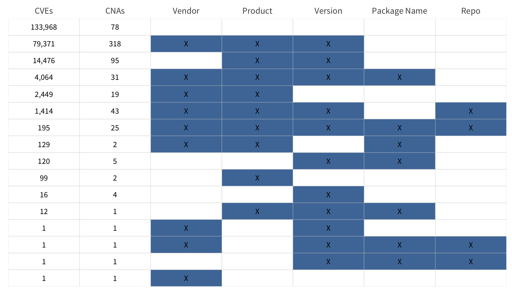
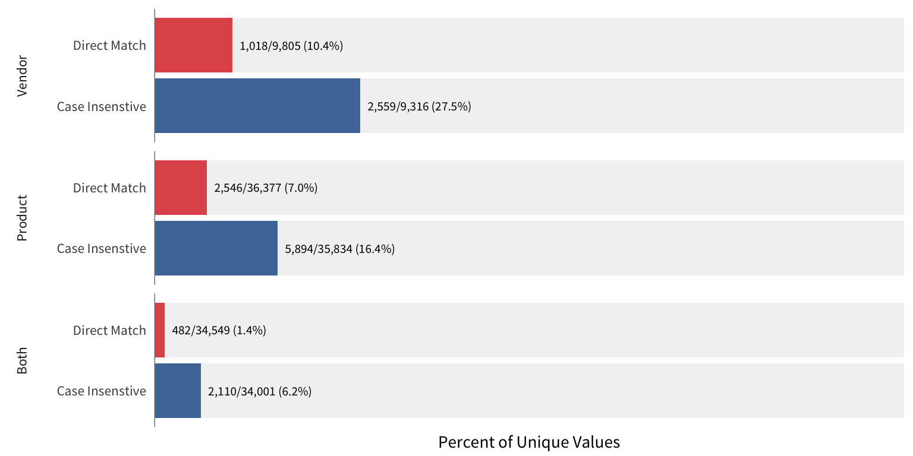
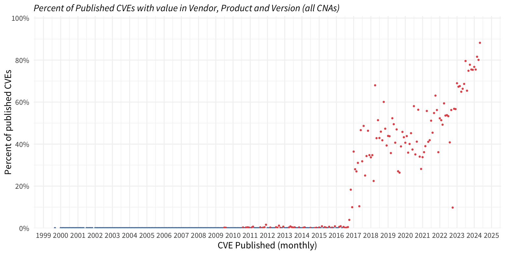
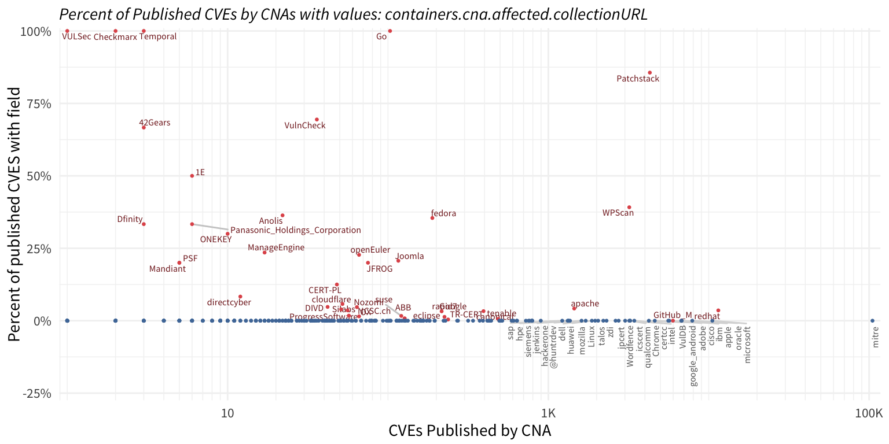
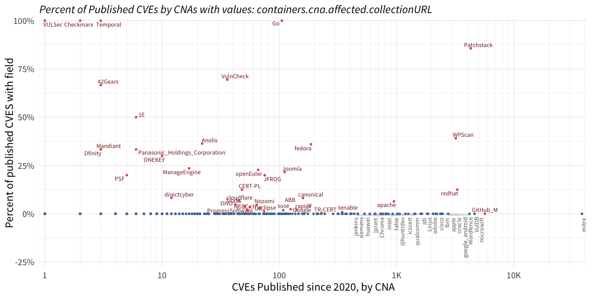
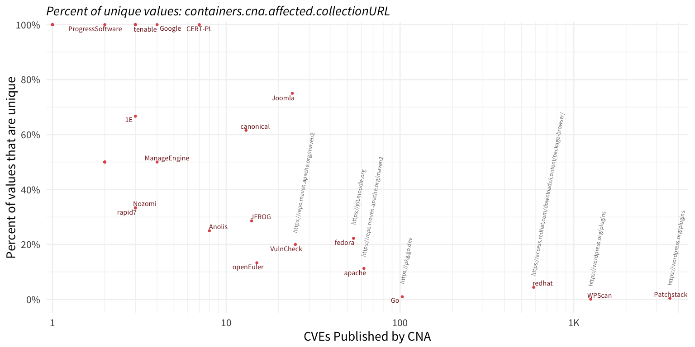
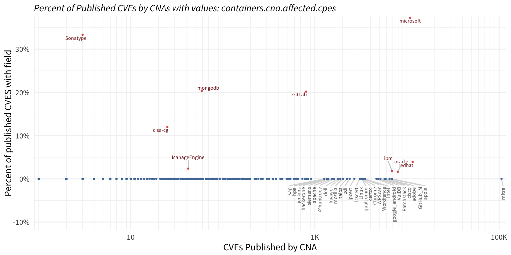

| JSON Field | CVEs | CVE Percent | CNAs | CNA Percent | JSON Type Discovered | JSON Schema |
|---|---|---|---|---|---|---|
| affected | 247093 | 94.5% | 349 | 99.1% | array | array of product |
| affected.collectionURL | 6587 | 2.5% | 45 | 12.8% | string | uriType |
| affected.cpes | 4923 | 1.9% | 9 | 2.6% | array | array of strings |
| affected.defaultStatus | 29654 | 11.3% | 293 | 83.2% | string | status ("affected", "unaffected", "unknown") |
| affected.modules | 1855 | 0.7% | 85 | 24.1% | array | array of strings |
| affected.packageName | 5607 | 2.1% | 63 | 17.9% | string | string |
| affected.platforms | 6945 | 2.7% | 163 | 46.3% | array | array of objects |
| affected.product | 111529 | 42.7% | 348 | 98.9% | string | string |
| affected.programFiles | 3084 | 1.2% | 22 | 6.2% | array | array of strings |
| affected.programRoutines | NA | NA | NA | NA | array | array of objects |
| affected.programRoutines.name | 110 | 0.0% | 10 | 2.8% | string | string |
| affected.repo | 3717 | 1.4% | 71 | 20.2% | string | uriType |
| affected.vendor | 96777 | 37.0% | 343 | 97.4% | string | string |
| affected.versionType | 1 | 0.0% | 1 | 0.3% | string | |
| affected.versions | 246950 | 94.4% | 349 | 99.1% | array | array of objects |
| affected.versions.changes | 3743 | 1.4% | 52 | 14.8% | array | array of objects |
| affected.versions.changes.at | 3743 | 1.4% | 52 | 14.8% | string | array of objects |
| affected.versions.changes.status | 3743 | 1.4% | 52 | 14.8% | string | array of objects |
| affected.versions.lessThan | 28900 | 11.1% | 254 | 72.2% | string | string |
| affected.versions.lessThanOrEqual | 20536 | 7.9% | 210 | 59.7% | string | string |
| affected.versions.status | 246950 | 94.4% | 349 | 99.1% | string | status ("affected", "unaffected", "unknown") |
| affected.versions.version | 104264 | 39.9% | 348 | 98.9% | string | string |
| affected.versions.versionType | 45930 | 17.6% | 293 | 83.2% | string | string |
Detailed view of Affected Products (container.cna.affected)
This view is specifically focused on container.cna.affected. The table below shortened all of the variables so the container.cna. portion is truncated.
JSON Fieldis the compound name of the JSON data elementCVEscount of unique CVE identifiers with theJSON FieldCVE Percentpercent of total CVEsCNAscount of unique CNA short names providing theJSON FieldCNA Percentpercent of total CVEsJSON Type Discoveredthe type of json data present in the dataJSON Schemawhat the JSON schema defines the data to be, if this is not present there is no definition of the `JSON Field” in the JSON schema.
Affected vendor, product, version and/or package name or repository.
These fields represent the minimum necessary to identify the vulnerable product(s) or software. The table below identifies How many CVEs and CNAs have non-null values in the field. One thing to note: the “version” is represented by a JSON object and this code looks for anything specified in the “versions” object while ignoring the containers.cna.affected.versions.status since almost every record had that value with nothing else specified in this section.

Are the vendor and product defined in the CPE dictionary?
This grabs the CPE dictionary from NVD and will first check the value provided “as is” against the same value in the CPE dictionary. Second, it does a case-insensitive match against the defined values in the CPE.
CPE Dict 2.3 has 21,699 unique vendors and 134,714 unique combinations of vendor and product.

When are CVEs published with vendor, product and version (VPV)?
This next plot treats a “complete” record if any of the “affected” records has a value in the vendor AND product AND versions. It is not inspecting those fields for quality, just that something in present. Again, the containers.cna.affected.versions.status is being ignored.

Which CNAs are published more complete VPV values?
This looks at the percent of CVEs with a complete VPV record from each CNA and compares against the total number of CVEs from that CNA.
Take note just how many CNAs are across the bottom (or the lack of CNAs at the bottom). This indicates that almost every CNA has been able to produce a complete VPV record.
mitre as a CNA really sticks out here.

Timing of complete VPV records without CVEs published by MITRE

collection URL




affected.cpes

